Cameras
KAYA Cameras
KAYA Instruments high-speed industrial grade, small form factor, low power cameras
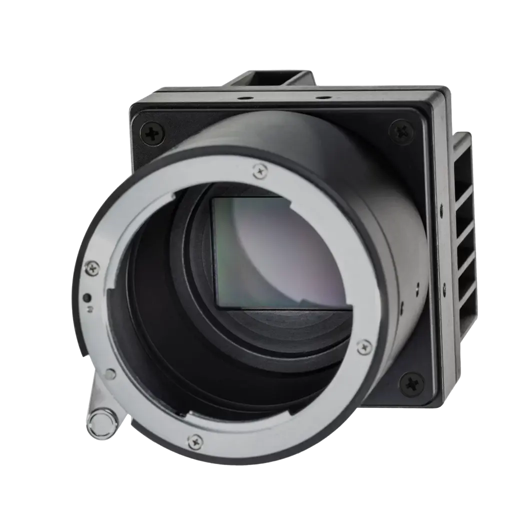
Zinc3265 PCIe
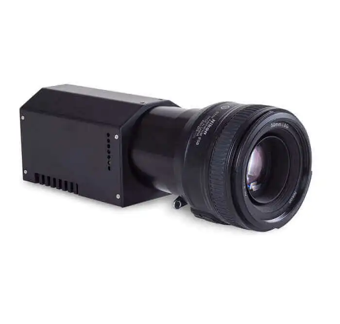
JetCam 19 QSFP+
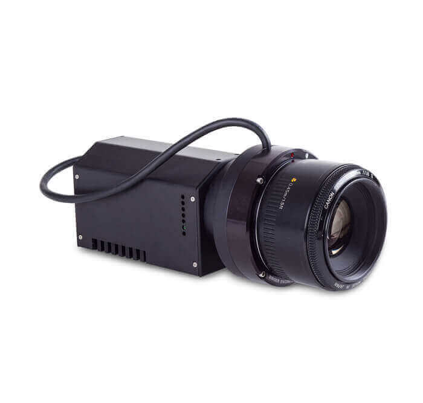
JetCam 160 QSFP+
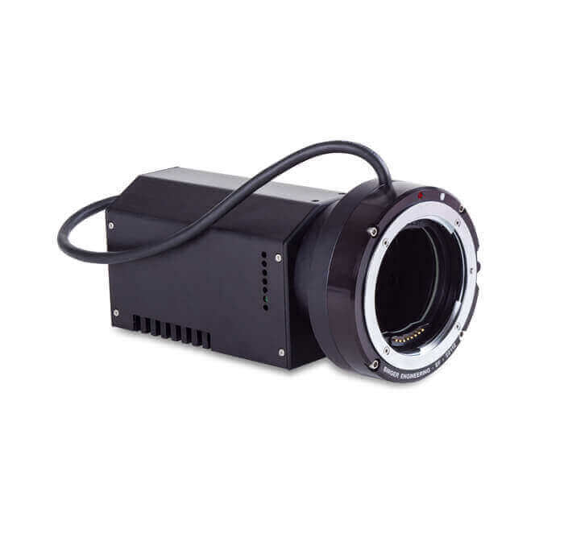
JetCam 19 Dual SFP+
JetCam 160 Dual SFP+
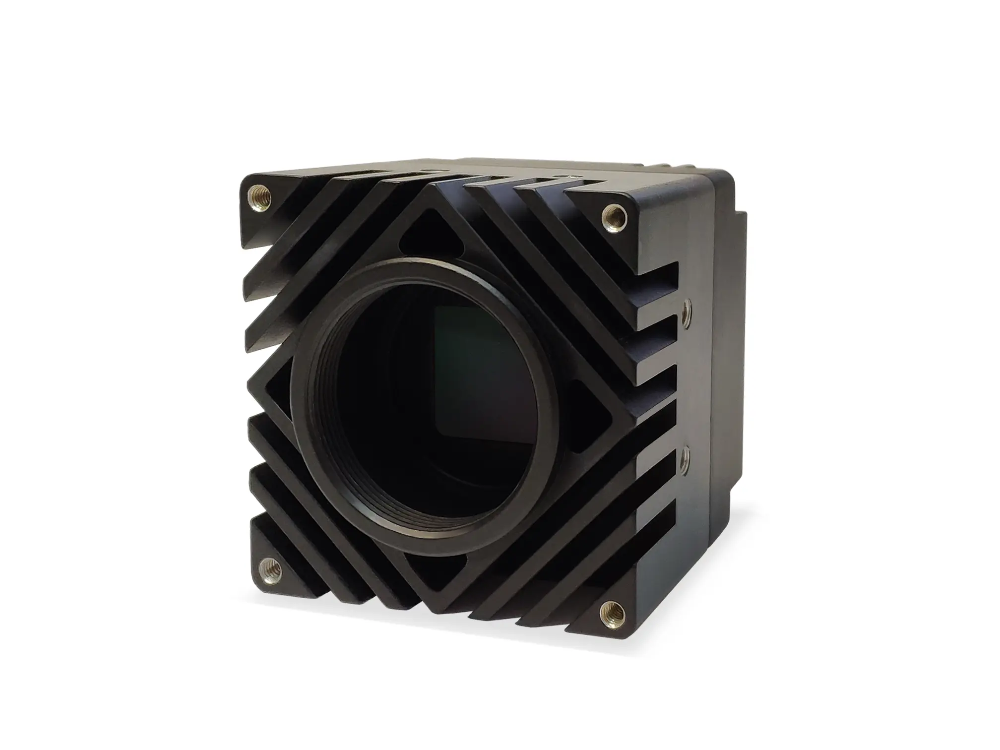
Iron SDI 265
The Iron SDI 265 is a low-cost, low-power global shutter CMOS camera with an SDI interface which supports up to 3G-SDI, enabling 2k video at rates of up to 60fps.

Iron SDI 3265
The Iron SDI 3265 is a low-cost, low-power, high-resolution global CMOS camera with up to 4 channels of 12G-SDI interface which supports 8k high-quality video at rates of up to 60fps.
Iron SDI 2020BSI
The Iron 2020BSI SDI is an ultra-thin, low-cost, low-power rolling shutter CMOS camera with an SDI interface which supports high quality video at rates up to 60 fps.
Iron SDI 305
The Iron SDI 305 is a low-cost, low-power global shutter CMOS camera with an SDI interface which supports the industry leading 12G-SDI, enabling 4k video at rates of up to 60fps.
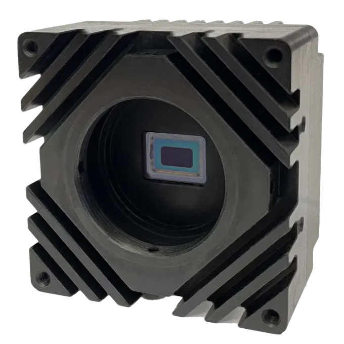
Iron 3GSDI 462
Mercury SWIFT
Mercury SWIFT CoaXPress is an ultra-thin high speed, low-cost, low-power Global shutter InGaAs camera with a Micro-BNC interface which supports 0.3 Megapixel high quality video at rates up to 1600.0 fps.
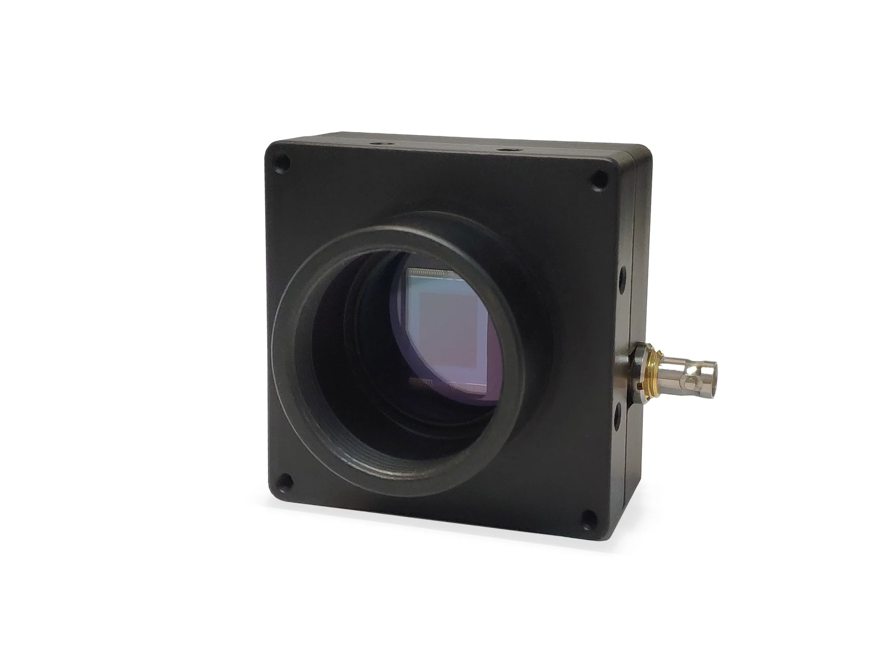
Iron 255
Iron CoaXPress 255 is a low-cost low-power global shutter CMOS IMX255 Camera with CoaXPress 12G interface which supports 8.85 MP high quality video at rates up to 87.6fps.
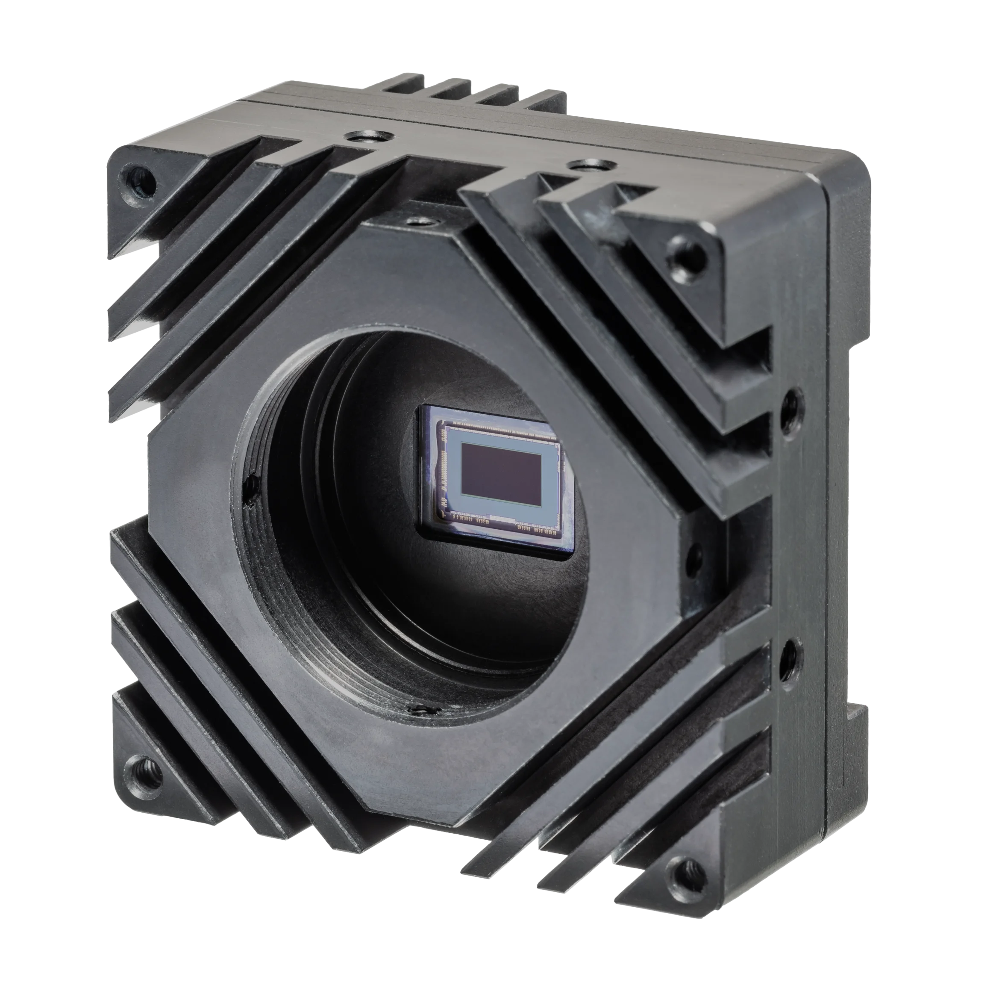
Iron 462
The Iron 3GSDI 462 is an ultra-thin, low-cost, low-power rolling shutter CMOS camera with an SDI interface that supports high-quality video at rates up to 60 fps. With an optional analog video output, this camera is highly versatile, allowing it to fit various tasks and conditions.
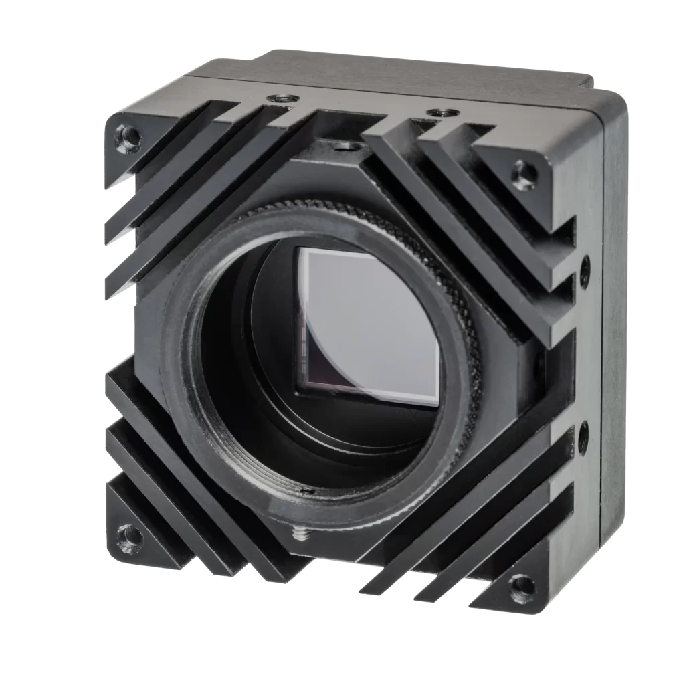
Iron 0505
The Iron 0505 is a high speed, low-cost, low-power global shutter CMOS camera with up to 50 Gbps CoaXPress v2.0 interface (Micro-BNC connector) which supports 25 MP high quality video at rates of up to 150fps.
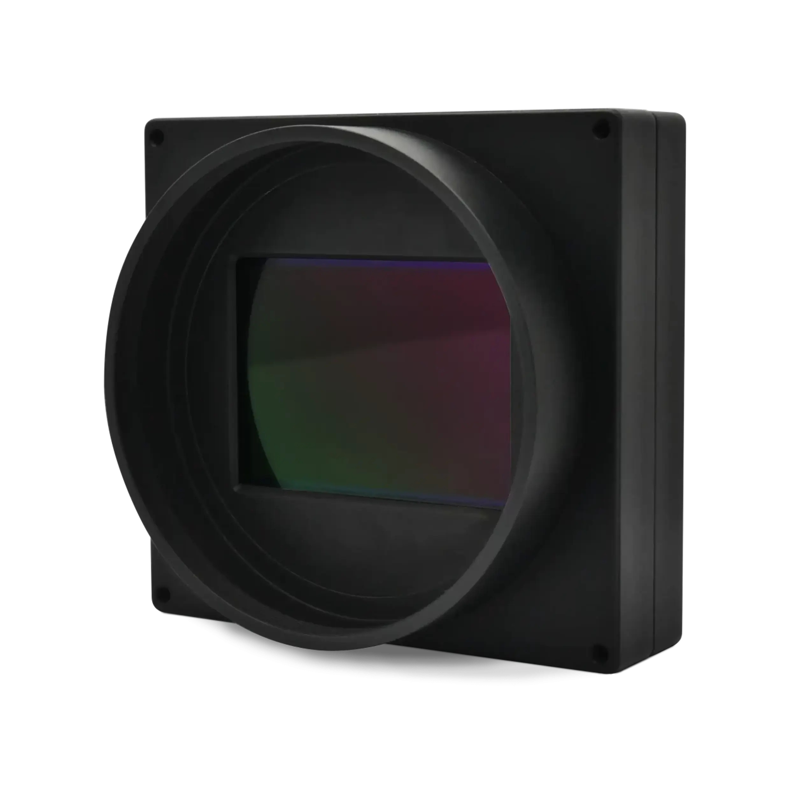
Iron 661
The Iron661 is a low-cost, low-power, high resolution global CMOS camera with up to 50 Gbps CoaXPress v2.0 interface (Micro-BNC connector) which supports 127 MP high quality video, with 13400 (H) x 9528 (V) resolution, at rates of up to 22fps.
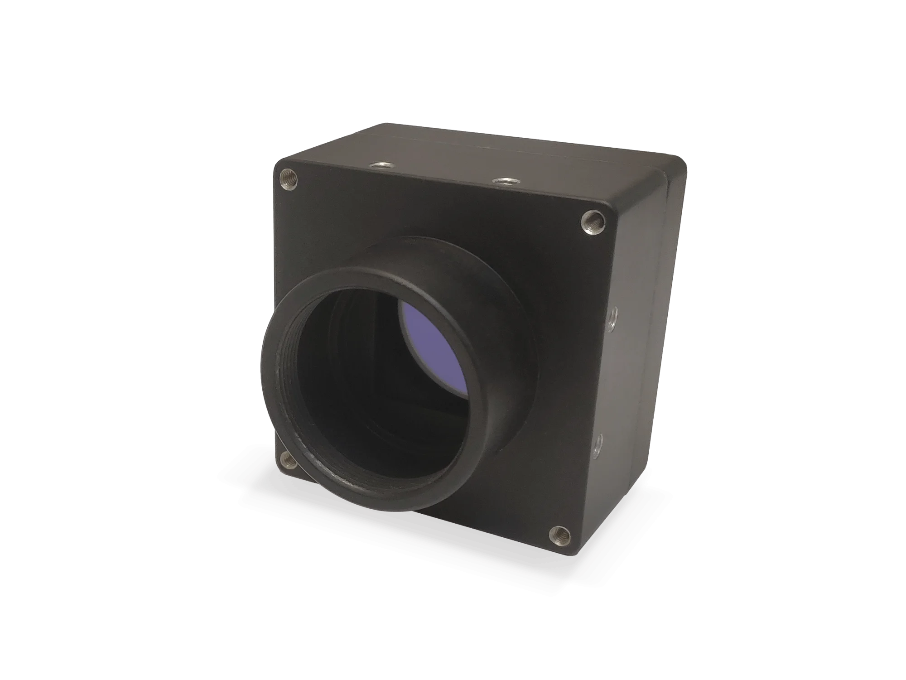
Iron 2011E
The Iron 2011E is high-speed, low-cost, low-power global shutter CMOS camera with up to 12.5 Gbps CoaXPress v2.0 interface (Micro-BNC connector) which supports 2 MP high quality video at rates of up to 513fps.
Iron 250
Iron CoaXPress 250 is a high speed low-cost low-power global shutter CMOS camera with CoaXPress 12G interface which supports 5.01 MP high quality video at rates up to 155.5fps.
Iron 252
Iron CoaXPress 252 is a high speed low-cost low-power global shutter CMOS camera with CoaXPress 12G interface which supports 3.15 MP high quality video at rates up to 205.8fps.
Iron 253
Iron CoaXPress 253 is a low-cost low-power global shutter CMOS camera with CoaXPress 12G interface which supports 12.29 MP high quality video at rates up to 63.8fps.
Iron 2020BSI
The Iron 2020BSI is a high speed, low-cost, low-power rolling shutter CMOS camera with up to 12.5 Gbps CoaXPress v2.0 interface (Micro-BNC connector) which supports 4 MP high quality video at rates of up to 74fps.
Iron 2020BSI-UV
The Iron 2020BSI is a high speed, low-cost, low-power rolling shutter CMOS camera with up to 12.5 Gbps CoaXPress v2.0 interface (Micro-BNC connector) which supports 4 MP high quality video at rates of up to 74fps.
Iron 2020E
The Iron 2020E is a high speed, low-cost, low-power global shutter CMOS camera with Fiber interface which supports 4 MP high quality video at rates up to 290fps.
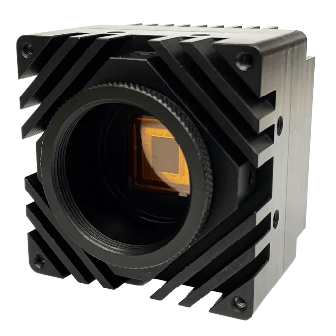
Iron 2505
The Iron 2505 is a high speed, low-cost, low-power global shutter CMOS camera with up to 25 Gbps CoaXPress v2.0 interface (Micro-BNC connector) which supports 5 MP high quality video at rates of up to 290fps.
Iron 2509
The Iron 2509 is a high speed, low-cost, low-power global shutter CMOS camera with up to 50 Gbps CoaXPress v2.0 interface (Micro-BNC connector) which supports 9 MP high quality video at rates of up to 290fps.
Iron 2518
The Iron 2518 is a high speed, low-cost, low-power global shutter CMOS camera with up to 50 Gbps CoaXPress v2.0 interface (Micro-BNC connector) which supports 18 MP high quality video at rates of up to 139fps.
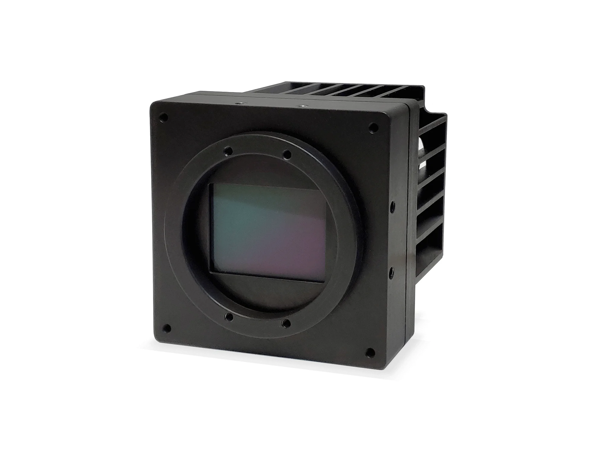
Iron 3249
The Iron 3249 is a low-cost, low-power, high resolution global CMOS camera with up to 25 Gbps CoaXPress v2.0 interface (Micro-BNC connector) which supports 49 MP high quality video at rates of up to 36fps.
Iron 3265
Iron 4502
The Iron4502 CoaXPress is a low-cost, low-power, high-resolution global CMOS camera with up to 50 Gbps CoaXPress v2.0 interface (Micro-BNC connector) which supports 2.1 MP high-quality video at rates of up to 2436 fps.
Iron 4510
The Iron4510 CoaXPress is a low-cost, low-power, high-resolution global CMOS camera with up to 50 Gbps CoaXPress v2.0 interface (Micro-BNC connector) which supports 10 MP high-quality video at rates of up to 487 fps.
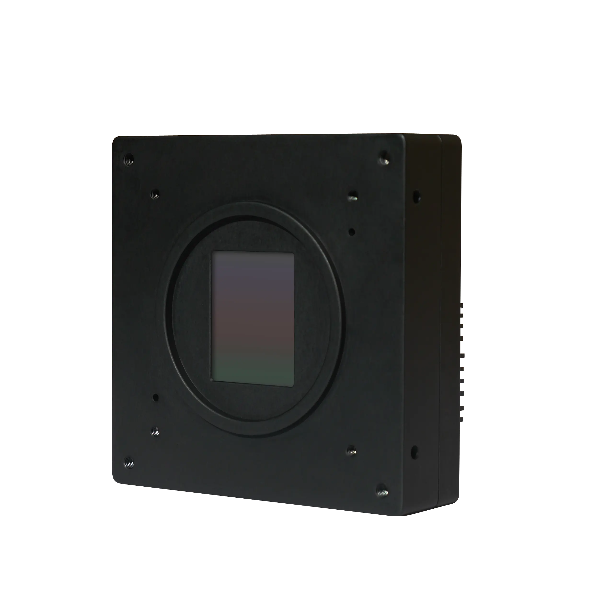
Iron 4521
The Iron4521 CoaXPress is a low-cost, low-power, high-resolution global CMOS camera with up to 50 Gbps CoaXPress v2.0 interface (Micro-BNC connector) which supports 21 MP high-quality video at rates of up to 232 fps.
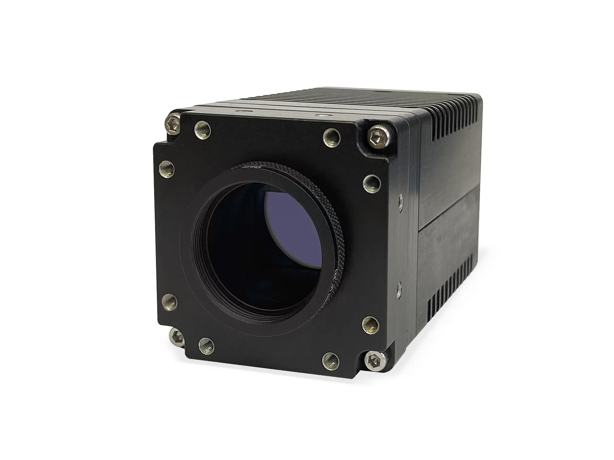
Iron CoF 250
Iron CoF 250 is a compact, high speed, low-cost, low-power global shutter CMOS camera with a CoaXPress Over Fiber interface which supports 5.01 MP high quality video at rates up to 155.5 fps.
Iron CoF 252
Iron CoF 252 is a compact, high speed, low-cost, low-power global shutter CMOS camera with a CoaXPress Over Fiber interface which supports 3.15 MP high quality video at rates up to 205.8 fps.
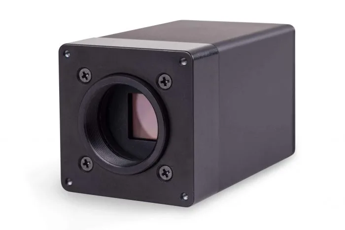
Iron CoF 255
Iron CoaXPress Over Fiber 255 is a compact low-cost, low-power global shutter CMOS camera with a CoaXPress Over Fiber interface which supports 8.85 MP high quality video at rates up to 87.6 fps.
Iron CoF 2020E
The Iron 2020E is a high-speed, low-cost, low-power global shutter CMOS camera with a CoaXPress over Fiber Bridge 1.0 interface (via a SFP+ module) which supports 4 MP high quality video at rates of up to 290fps.
Iron CoF 2011E
The Iron 2011E is a high-speed, low-cost, low-power global shutter CMOS camera with a CoaXPress over Fiber Bridge 1.0 interface (via a SFP+ module) which supports 2 MP high quality video at rates of up to 513fps.
Iron CoF 2020BSI
The Iron 2020BSI is a high-speed, low-cost, low-power global shutter CMOS camera with a CoaXPress over Fiber Bridge 1.0 interface (via a SFP+ module) which supports 4 MP high quality video at rates of up to 74fps.
Iron CoF 2020BSI-UV
The Iron 2020BSI-UV is a high-speed, low-cost, low-power global shutter CMOS camera with a CoaXPress over Fiber Bridge 1.0 interface (via a SFP+ module) which supports 4 MP high quality video at rates of up to 74fps.
Iron 2020BSI Camera Link High Speed Compatible
The Iron 2020BSI Camera Link High Speed Compatible is a low-cost, low-power rolling shutter CMOS camera, with Camera Link High Speed compatible interface which supports 4MP high quality video at rates up to 135fps.
Iron CoF 253
Iron CoF 253 is a compact low-cost, low-power global shutter CMOS camera with a CoaXPress Over Fiber interface which supports 12.29 MP high quality video at rates up to 63.8 fps.